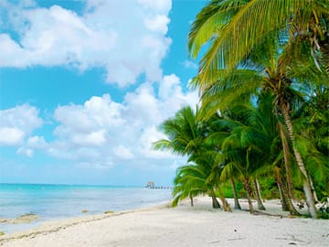

What to do in Cozumel Mexico?
 So what are the best things to do in Cozumel Mexico? Cozumel is a large island, and has many great activities and attractions to choose from . . . a popular Island, gets a large amount of cruise ship traffic, more than any other cruise port in the Caribbean. The Cozumel Port gets millions of cruise ship passengers each year. The Port of Cozumel was rated #3 for the best cruise ports in the World. The Island was also rated as one of the top safest places in the World to live or travel.
As you may already know Isla Cozumel Mexico is famous for its magnificent coral reefs. This makes way for the most amazing snorkel and diving experiences available in the entire Caribbean. Drift diving was pretty much created in Cozumel because of the perfect current that flows along the island. This allows divers and snorkelers to use very little energy to enjoy the reefs in Cozumel. The current that flows along the island also helps keep the corals healthy and clean, and adds to the crystal clear visibility Cozumel is famous for. But what you may not know, is that Cozumel has the most magnificent beaches in the Caribbean & Riviera Maya, and has many hidden secrets . . . . read more ~~> Cozumel Cruise Excursions